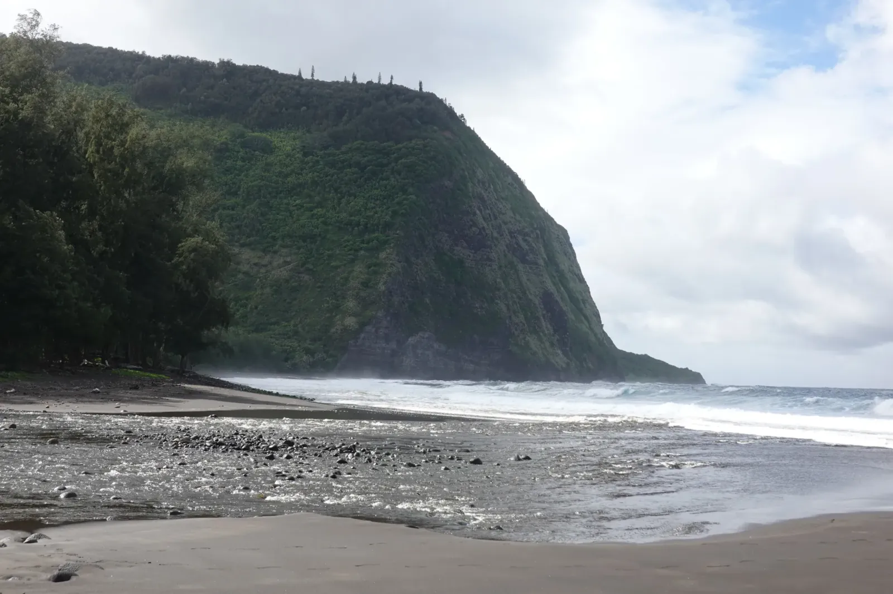

Valley of Kings
Highway 240 on the Big Island's Hamakua Coast ends at a lookout, and just past it the land falls nearly a thousand feet to the sea. That is Waipio Valley. It's about a mile wide at the shore and runs six miles back into the mountains, with emerald walls that plunge straight down to a black sand beach. At that height the surf was only a pale seam along the base of the cliffs. Waipio was home to Hawaiian royalty for centuries, which earned it the name Valley of the Kings, and after one look at the size of it I understood why. None of my pictures from the lookout hold the scale.
The road down to the valley floor is so steep that, when I visited, only four-wheel-drive vehicles were allowed on it. Plan the way back up before you go down. At the bottom, a river spread across the black sand to meet the sea, thin waterfalls streaked the walls, and palms and tall trees lined the shore. Then the weather turned. Clouds stacked up over the ridge until the whole valley went the gray of wet slate, and the surf, already big, hammered the foot of the cliffs until the air turned to mist. I kept shooting for a long while. A faint rainbow even showed up over the water for a moment, as if the sky had second thoughts!

A bleached log lay stranded in the river, and under the trees a couple of horses grazed in the ferns and paid the surf no attention. Kings came and went here, but the cliffs outlasted every one of them. Waipio is what a lava island looks like after water has had a very long time to work on it, and I only got an afternoon. On the drive afterward, a red-flecked cinder cone sat in a dry pasture, the other half of the story.